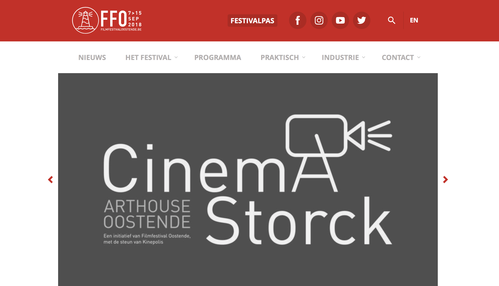
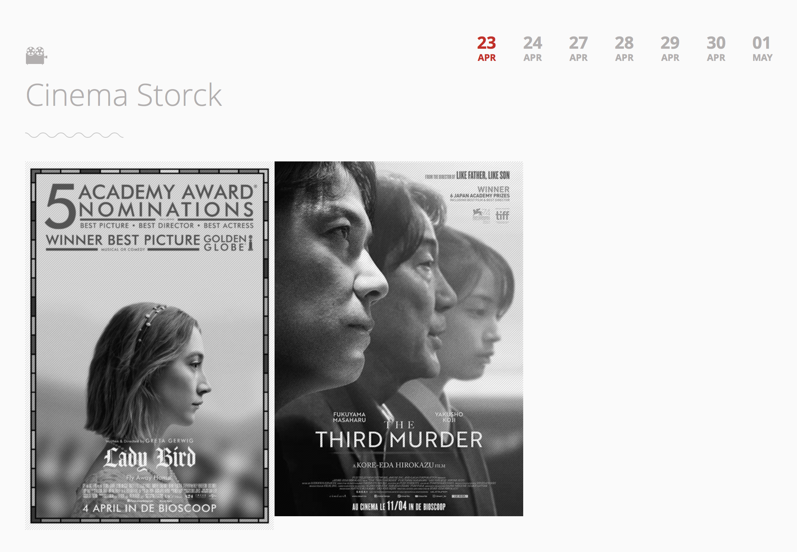
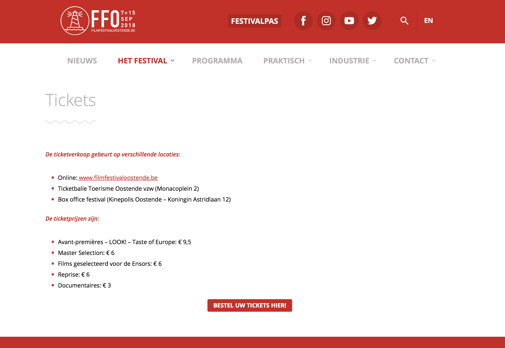
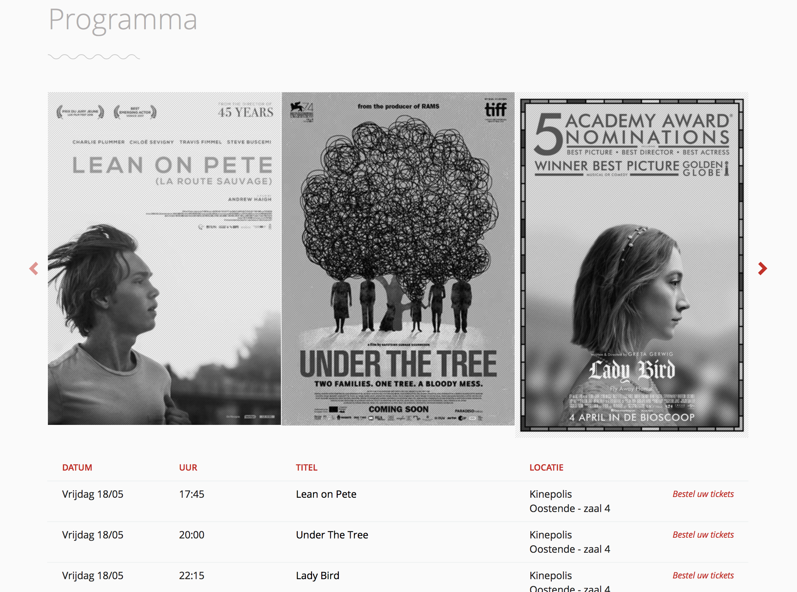

New Media Design I
Eindopdracht
Concurrentie Analyse
1. Film Festival Oostende
(www.filmfestivaloostende.be)




Knopje op bovenste balk met “festivalpass“. Dit is zeer praktisch.
Homepage met afwisseling van foto’s over de verschillende films. Men kan erop klikken waardoor we meer informatie op de film zelf krijgen.
Knopje op bovenste balk met “festivalpass“. Dit is zeer praktisch.
Knopje op bovenste balk met “festivalpass“. Dit is zeer praktisch.
Knopje op bovenste balk met “festivalpass“. Dit is zeer praktisch.
Knopje op bovenste balk met “festivalpass“. Dit is zeer praktisch.